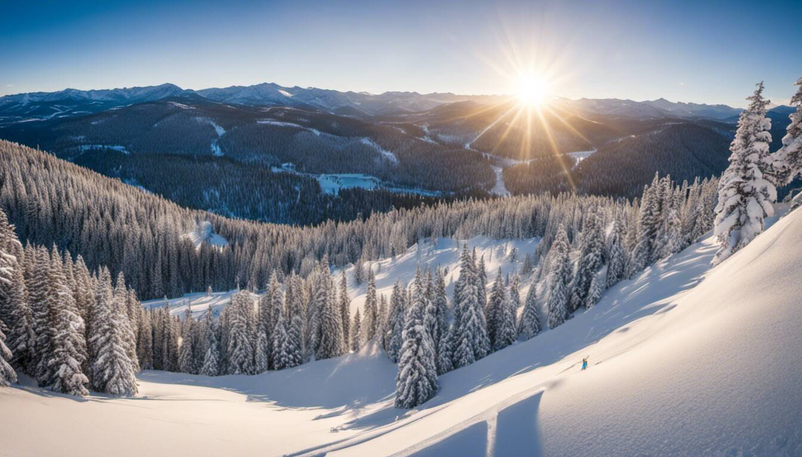
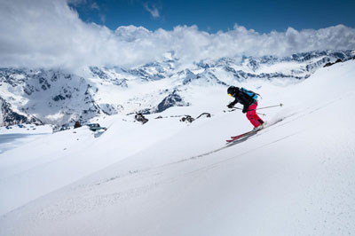

Tamarack Ski Resort Idaho: Your Ultimate Winter Getaway for Skiing and Snowboarding
Tamarack Ski Resort, an alpine jewel in Idaho, offers a range of features and amenities for visitors. With over 2,800 skiable acres twinkling beneath ski resorts, it boasts a variety of slopes suitable for all skill levels. At the heart of the ski area lies an expansive chairlift network weaving through the resort's terrain parks. The resort also offers modern lift systems, rental equipment, ski lessons, and a dedicated terrain park for freestyle enthusiasts. In addition, vacation-goers can find solace in cozy lodges, taste local cuisines in resort restaurants, explore unique finds in on-site shops, and engage in other recreational activities both on and off the slopes.

Journey to Tamarack Ski Resort Idaho
Embarking on a vacation journey to the best of the Idaho ski resorts, Tamarack. Tamarack in Idaho is an exciting alpine adventure that promises breathtaking views and thrilling winter activities. Whether you are a seasoned skier or snowboarder eager to test their skills on new terrain parks, or someone who simply wants to immerse themselves in the beauty of frost-topped nature, Tamarack, with its expansive ski area and comfy lodges, offers an unforgettable experience.
As you begin your journey, picture driving along scenic winding roads, lined by the alpine wilderness. The anticipation builds as you pass through quaint towns and picturesque farmlands. As you approach the resort, the vision of snow-capped mountains rising majestically against the sky takes your breath away. The chairlifts, reaching out to the sun-kissed peaks, invite you to explore the resort's stunning terrain.
A warm welcome awaits as you enter Tamarack Ski Resort. Wrapped in rustic charm, the lodges and restaurants brim with a sense of pleasing comfort. From the inviting crackling fireplaces to the aroma of delicious fares wafting from kitchens, everything at the resort exudes a sense of warmth and belonging.
Now that we've set foot in this winter wonderland, let's explore how to reach it from Major Idaho cities.
Directions from Major Idaho Cities
Tamarack Ski Resort is conveniently located within easy reach of several major renowned ski resorts in Idaho. Whether you're coming from Boise, Twin Falls, or Coeur d'Alene, you're in for an enchanting drive to your idyllic vacation spot.
The driving instructions remain unchanged as provided in the original text.
Now that we have our directions secured, let's dive into the heart of Tamarack - the ski area - and explore an overview of the season and the incredible terrain parks that await eager winter sports enthusiasts.
Nestled amidst the ethereal beauty of Idaho, Tamarack Ski Resort is a haven for winter sports enthusiasts. Alpine slopes, state-of-the-art chairlifts, and thrilling terrain parks all contribute to a unique skiing experience, making Tamarack one of Idaho's preferred ski resorts.
The ski season at Tamarack, this breathtaking mountain paradise, typically spans from November to April. This allows visitors ample time to strap on their skis or snowboard and run down the wealth of slopes, from easy glades to challenging bowls. With an average snowfall of over 300 inches each year and a base elevation of 4,900 feet, Tamarack boasts excellent conditions for both novice riders and seasoned pros seeking thrilling winter adventures on diverse backcountry terrain.
The terrain at Tamarack is as diverse as it is extensive, catering to all skill levels. Whether you're a beginner looking to conquer your first slope or an expert seeking heart-pounding challenges, this resort has something for everyone. With a vertical drop of 2,800 feet, breathtaking bowls, and surprising glades at every turn, Tamarack promises exhilarating descents that will leave you craving more.
To fully appreciate the beauty of Tamarack's terrain, its extensive trail system deserves mention. With over 42 unique runs spread across 1,100 acres, skiers and snowboarders can explore varying degrees of difficulty leveraging their lift tickets. Ranging from gentle meandering trails through pristine forests for beginners to adrenaline-pumping double black diamonds for advanced riders seeking the thrill of backcountry terrain, Tamarack offers a smorgasbord of choices.
Inside Tamarack: Season and Terrain Overview
Fresh food and rest await at the base after a day spent navigating meticulously groomed slopes that promise smooth glides as you carve your way down the mountain. This attention to detail ensures optimal conditions across the resort, enabling skiers and snowboarders of all levels to fully enjoy their time on the slopes.
Picture yourself standing atop one of Tamarack's peaks, surrounded by breathtaking views of snow-covered mountains extending as far as the eye can see. The crisp winter air fills your lungs as anticipation builds within you. Poised for your run, you push off gently and begin your descent down a well-groomed trail, feeling the rush of wind against your face as you weave through towering pines. This is the essence of Tamarack, a sanctuary where winter dreams come true.
Now that we have explored the season and terrain overview of Tamarack Ski Resort, let's delve into the specific trails and slopes available for beginners and experts alike, that make it the perfect place for snowboarders and skiers to experience their winter adventures.
Tamarack offers an excellent learning environment for those new to skiing or snowboarding. The resort provides specially designated beginner areas with gentle slopes - ideal to run without fear - that allow newcomers to build their confidence and develop their skills at their own pace. Expert instructors are on hand to offer guidance and lessons, ensuring a safe and enjoyable experience for beginners of all ages.
Moving up the skill ladder, intermediate skiers and snowboarders will find an abundance of glades and bowls to challenge themselves while still enjoying a comfortable ride. Trails such as "Dreamweaver" and "The Boulevard" provide the perfect balance between excitement and control, allowing intermediate riders to progress in a supportive environment.
For the more experienced adventurers seeking adrenaline-pumping thrills, Tamarack has an array of expert trails that demand technical prowess and courage. "Headwall" is notorious for its steep pitch and moguls, while "Upper Encore Bowl" offers a vast expanse of ungroomed powder for those who crave deep snow exploration. Once you conquer these trails, treat yourself to some of the resort's delicious food to replenish your energy, ready for the next day's run. These trails push even seasoned riders to their limits, providing an unforgettable experience for those seeking the ultimate winter adventure.So, whether you're just starting or already well-versed in winter sports, Tamarack Ski Resort, with its reputation for excellence, has something for every skill level. With well-designed trails catering to beginners, intermediates, and experts alike, this mountain playground ensures a fulfilling and exhilarating experience, no matter your expertise on the slopes. Moreover, the ski area includes the added thrill of night skiing, from the summit to the base area, adding an extra layer of excitement to your visit. The resort's trail map clearly outlines the various ski areas, making navigation easy and enjoyable.
From Beginner Slopes to Expert Trails
Tamarack Ski Resort in Idaho offers visitors a plethora of amenities and facilities to enhance their winter getaway experience. From cozy lodging options to delicious dining establishments, at this expansive area, Tamarack has it all.
The resort boasts a variety of accommodations suitable for every budget and preference. Whether you prefer a luxurious slope-side condo or a charming cabin nestled amidst the trees in the base area, Tamarack has something to suit your needs. Imagine waking up to breathtaking mountain views and stepping out onto the slopes just moments later, ready for an exhilarating day of skiing or snowboarding.
To ensure guests are well-nourished during their stay, Tamarack provides an array of dining options that cater to different tastes and dietary preferences. From casual cafés serving quick bites to upscale restaurants offering fine dining experiences, there is no shortage of culinary delights at Tamarack. After a long day on the slopes, or an adventurous night skiing, treating yourself to a hearty meal while enjoying the cozy ambiance of the resort can be truly rewarding.
Additionally, Tamarack offers other amenities such as a well-renowned ski school for those seeking to improve their skills or newcomers to the sport.
- Tamarack Ski Resort offers a range of trails catering to beginners, intermediates, and experts, providing an excellent learning environment for all skill levels. Specially designated beginner areas with gentle slopes and expert instructors make it an ideal place for newcomers to build confidence and develop their skills at their own pace. Intermediate skiers and snowboarders will find challenging yet comfortable trails that allow them to progress in a supportive environment. For experienced adventurers seeking thrilling experiences, Tamarack offers expert trails that demand technical prowess and courage. With well-designed trails for every skill level, Tamarack ensures a fulfilling and exhilarating experience on the slopes.
Navigating Through Tamarack: Amenities and Facilities
Now that we have familiarized ourselves with the amenities and facilities available at Tamarack Ski Resort, let's explore the details regarding ski gear rentals and trail pass information.
For those who don't own their own ski or snowboarding equipment, Tamarack Ski Resort offers convenient rental services. Whether you're a beginner or an expert, you will find a wide range of high-quality gear available for rent. From skis and snowboards to boots and helmets, the resort ensures that visitors have everything they need to hit the slopes safely and comfortably.
Imagine arriving at Tamarack without any ski gear of your own. You can simply head to the rental shop, where friendly staff members will assist you in finding the perfect equipment for your skill level and preferences. They will take into account factors such as height, weight, and experience to ensure you are fitted with suitable gear.
When it comes to trail passes, Tamarack offers various options depending on your specific needs. Whether you plan to spend just one day on the mountain or want unlimited access throughout your stay, including the night skiing areas too, there is a pass option for you. The resort typically offers single-day passes, multi-day passes, and season passes. It's important to check the resort's website or contact their customer service for up-to-date pricing and availability.
| Amenities | Description |
|---|---|
| Spa and wellness facilities | Relax and rejuvenate after hitting the slopes with spa treatments or indulge in a soothing hot tub experience. |
| Retail shops and boutiques | Discover a range of retail options, from ski gear and winter apparel to unique souvenirs and gifts. |
| Fitness center | Stay active even off the slopes with access to state-of-the-art fitness equipment and exercise classes. |
| Kids' programs | Keep the little ones entertained with supervised activities and specialized lessons tailored for children of all ages and skill levels. |
Here are some trail pass options at Tamarack:
Ski Gear Rentals and Trail Pass Information
Tamarack Ski Resort in Idaho is renowned for its incredible skiing and snowboarding opportunities. However, it offers so much more than just hitting the slopes. This winter wonderland provides a plethora of activities to ensure that visitors have an unforgettable experience beyond skiing.
For those seeking an adrenaline rush on land, Tamarack boasts thrilling snowmobiling trails that wind through picturesque landscapes. Its stunning setting optimizes adventure and awe in equal measure, a testament to the resort's enduring appeal and reputation.Imagine zooming through snow-covered forests on a powerful machine, feeling the wind against your face as you explore the vast wilderness surrounding Tamarack, one of the most popular destinations for snow activities. Even during harsh weather, the resort remains an exhilarating activity hub that allows you to appreciate the beauty of natural scenery while experiencing the thrill of speed from the comfort of the resort hotel.
If you prefer to slow down and immerse yourself in a tranquil setting, Tamarack offers plenty of options for families to enjoy cross-country skiing or snowshoeing. Take a leisurely glide across groomed trails, surrounded by breathtaking views of snow-capped mountains and serene forests. Engaging in these activities allows you and your family to connect with nature on a deeper level, soaking in the peaceful ambiance as you make your way through snowy landscapes.
For those with a love for wildlife, Tamarack presents unique opportunities for animal enthusiasts. Guided wildlife tours are available for families, where knowledgeable guides lead you through habitats that are home to majestic creatures like elk, deer, and even wolves. This unforgettable family experience allows you to observe these incredible animals in their natural habitats, gaining insights into their behavior and conservation efforts underway to protect them.
| Pass Options | Description |
|---|---|
| Full-Day Passes | Allows access to all open lifts and trails for the entire day. Perfect if you plan to spend a full day exploring the mountain. |
| Half-Day Passes | For those with limited time or energy, half-day passes offer access to lifts and trails for either morning or afternoon sessions. |
| Multi-Day Passes | Ideal if you plan to stay at Tamarack for multiple days. These passes provide convenience and savings compared to purchasing daily passes individually. |
| Season Passes | Perfect for those who frequent Tamarack or plan to spend a significant portion of the winter season at the resort. |
Broaden the Experience: More Than Skiing at Tamarack
If relaxation is what you seek after a day on the slopes or exploring nature, Tamarack has you covered with its family-friendly spa facilities offering rejuvenating treatments. Unwind with a soothing massage or indulge in a pampering facial, melting away any tension and soothing tired muscles. The spa's serene environment provides the perfect oasis for relaxation and self-care, making it an ideal destination for all family members.
Picture yourself enjoying a hot stone massage, feeling the warmth penetrate your muscles, easing any soreness from a day of adventure in the beautiful scenery. The tranquility and indulgence offered by the spa at Tamarack Ski Resort elevate your winter getaway to new levels of relaxation and rejuvenation.
Tamarack Ski Resort is not just about skiing; it's a holistic winter experience that caters to various interests and preferences. Whether you're a family seeking thrills, scenic explorations, wildlife encounters, or ultimate relaxation, Tamarack has something for everyone.
Now that we've explored the myriad of activities available to broaden your experience at Tamarack Ski Resort let's dive into one of the most popular winter sports - snowboarding - and other exciting getaway activities perfect for families.
If you're a thrill-seeker looking for an alternative to skiing, snowboarding is an excellent choice at Tamarack Ski Resort. With its diverse terrain and perfectly manicured slopes, this winter destination caters to riders of all skill levels. From beginners learning their first turns to advanced riders executing tricks in the terrain park, Tamarack offers ideal conditions for snowboarders to hit the slopes with style.
Imagine carving through fresh powder on a wide-open slope, feeling the freedom as you glide down the mountain with the snowy peaks surrounding you. Snowboarding at Tamarack provides an exhilarating family experience that challenges both body and mind while providing an unforgettable adrenaline rush.
Tamarack Ski Resort is not just about skiing; it's a holistic winter experience that caters to various interests and preferences. Whether you seek thrills, scenic explorations, wildlife encounters, or ultimate relaxation, Tamarack has something for everyone.
Now that we've explored the myriad of activities available to broaden your experience at Tamarack Ski Resort let's dive into one of the most popular winter sports - snowboarding - and other exciting getaway activities perfect for all adventurers.
Snowboarding and Other Winter Getaway Activities
If you're a thrill-seeker looking for an alternative to skiing, snowboarding is an excellent choice at Tamarack Ski Resort. With its diverse terrain and perfectly manicured slopes, it caters to riders of all skill levels. From beginners learning their first turns to advanced riders executing tricks in the terrain park, Tamarack offers ideal conditions for snowboarders to hit the slopes with style.
Imagine carving through fresh powder on a wide-open slope, feeling the freedom as you glide down the mountain with the snowy peaks surrounding you. Snowboarding at Tamarack provides an exhilarating experience that challenges both body and mind while providing an unforgettable adrenaline rush.
For those who want to add a unique twist to their winter getaway, Tamarack also offers exciting options like tubing and ice skating. Zip down slippery slopes on specially-designed tubes, laughing with delight as you glide over the snow. Or channel your inner figure skater on the resort's ice rink, gracefully gliding across the ice under twinkling lights.
For those seeking a different kind of adventure, consider exploring backcountry trails with snowshoes or embark on a thrilling snowmobile tour. Snowshoeing allows you to wander off the beaten path, experiencing the untouched beauty of nature while taking in the stunning views. On a snowmobile tour, you'll zoom through snow-covered landscapes, discovering hidden corners of Tamarack's breathtaking surroundings.
Tamarack Ski Resort truly offers a winter wonderland that extends beyond skiing and snowboarding. Whether you crave heart-pounding excitement, serene exploration, or relaxing indulgence, this resort caters to your every desire.
Related Links
Sun Valley ResortBrundage Mountain